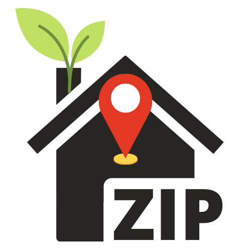

Gardening by ZIP Code

About
Plants
It'll be like an "Old Farmers' Almanac", but personalized
for your garden!
Create an account today...
- Enter your garden's ZIP Code and an email
- Create your garden, and/or
- Get smart plant recommendations based on your
garden's location and preferences.
- Enable notifications of key events like
harvest times, frost warnings, droughts, etc.
More about this project
What is it?
It's going be a web app written in Ruby on Rails that allows you
to do a few things for your yard/garden, like:
- Quickly find a pallete of plants based on your preferences
and built for your area
- CRUD (Create/Read/Update/Delete) your garden over
time, tracking yields or just the pretty pictures
your take each season!
Who's it for?
People that want a killer garden and
have the ability to see possibilities that will be
compatible for their yard and their preferences.
Why is it being built?
To save the world! I'm not too educated, techinically, like, I don't
have a degree in horticulture, but I did pass the Master Gardener exam
and I did work at a plant nursery for almost 3 years. I knew just enough
to see how tech could help us become better gardeners, and better gardening
could save the world, really! In particular, gardening is about using the
right plants, or, adjusting to the environment at hand; tuning
into the seasonal rhythm. Selecting plants that are already
antifragile in your area (ZIP code).
How can I support GBZ?
- Tell your friends about GbZ!
- Use the app!
- We might develop a mobile app one day...
- For now, bookmark this page in your browser!
- Share GbZ on social!
- Use it to manage your yard and garden/s!
- Upgrade to the paid plan!
Copyright @TyghWalters 2021